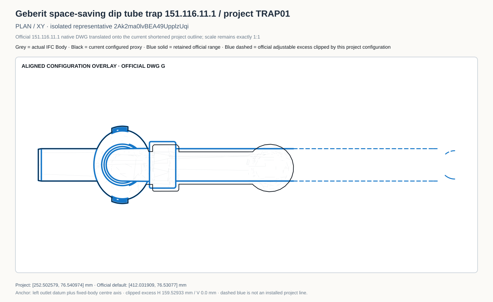
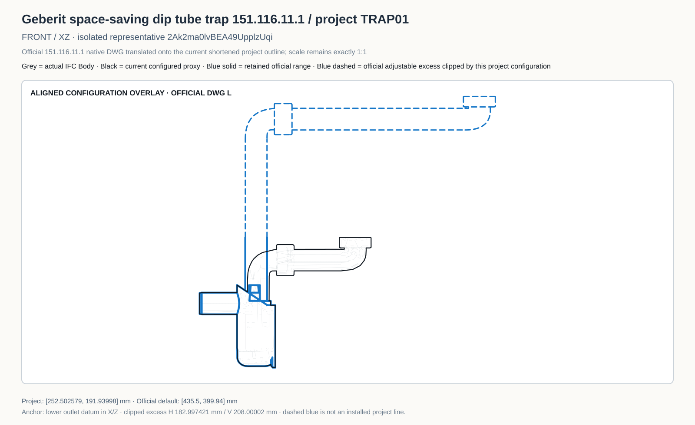
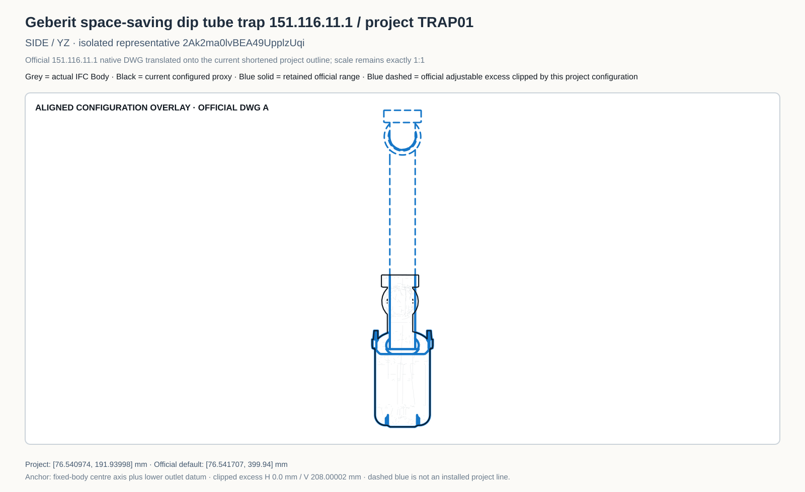
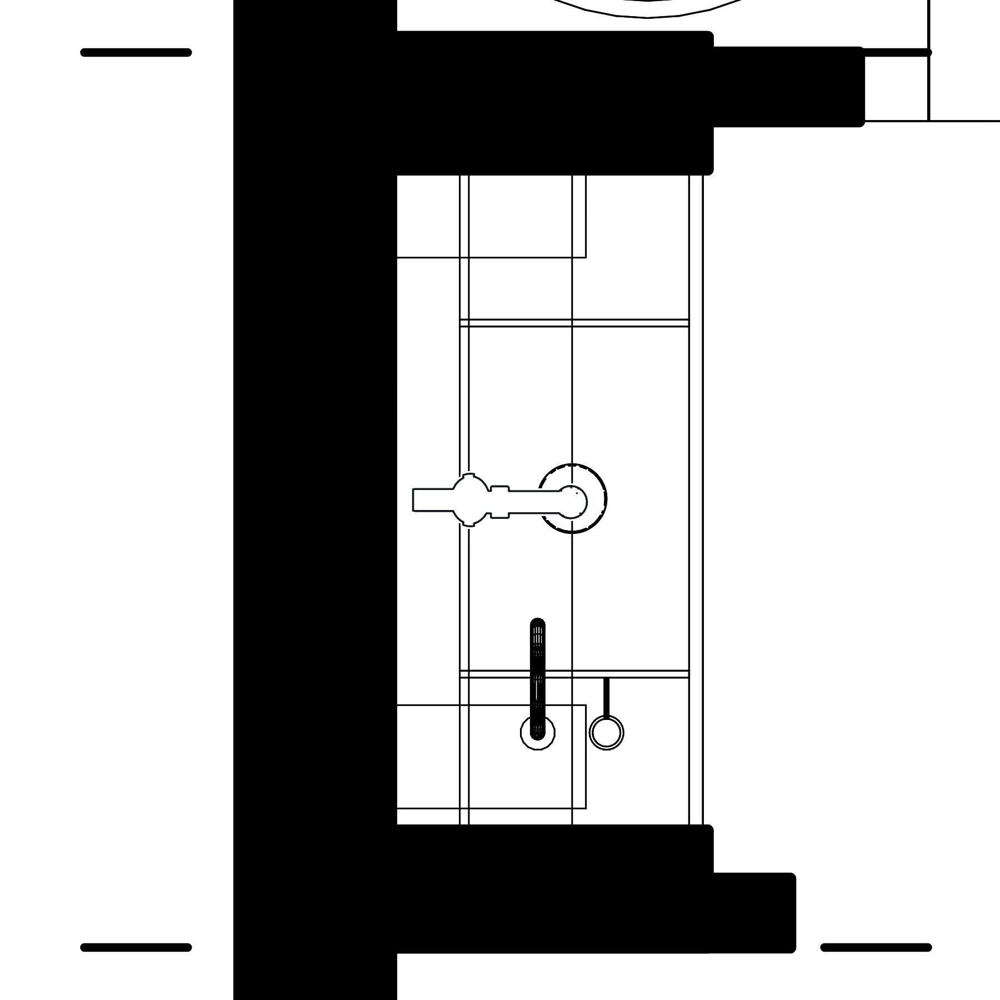
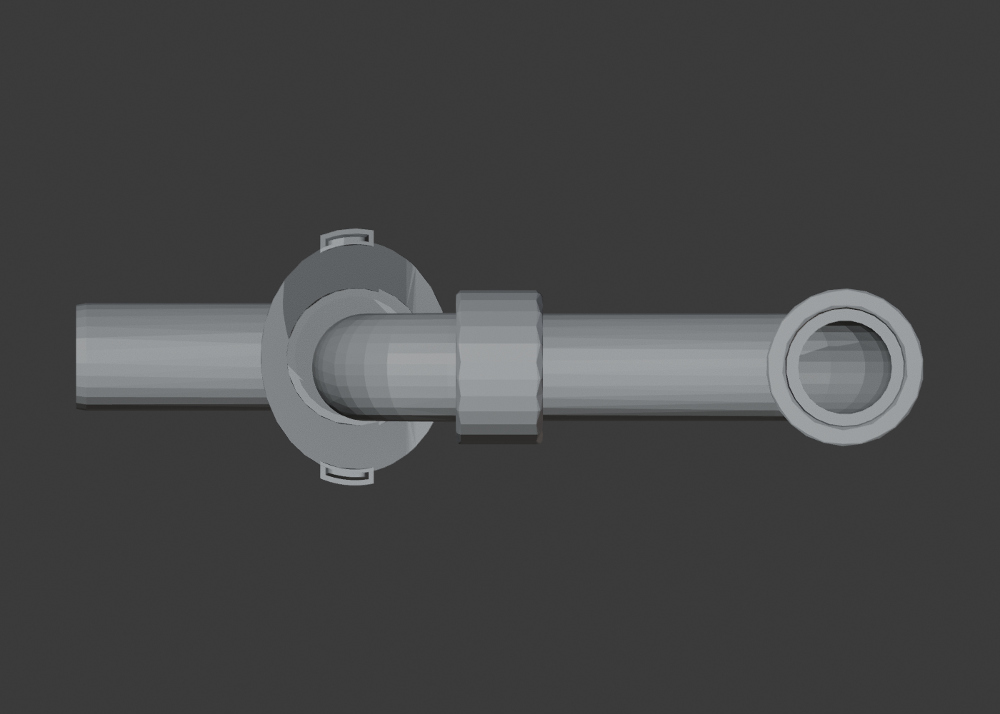
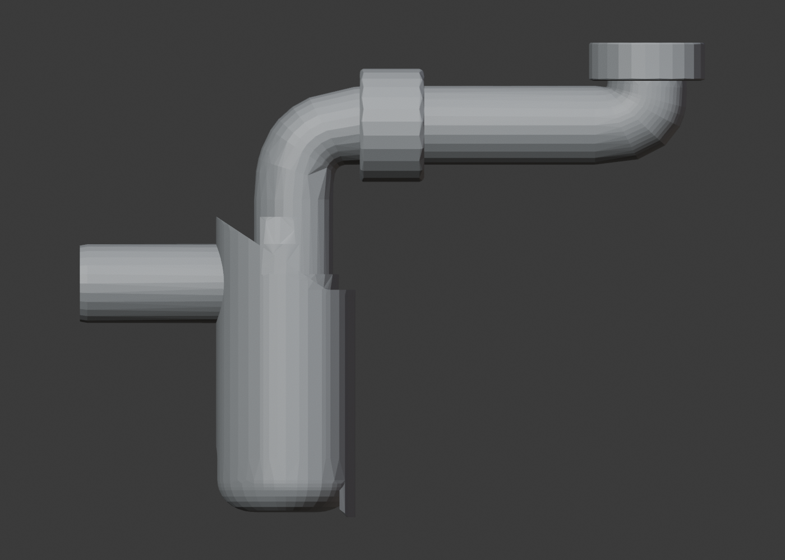
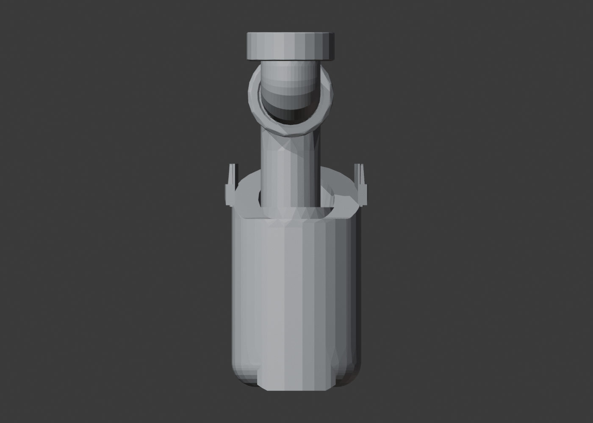
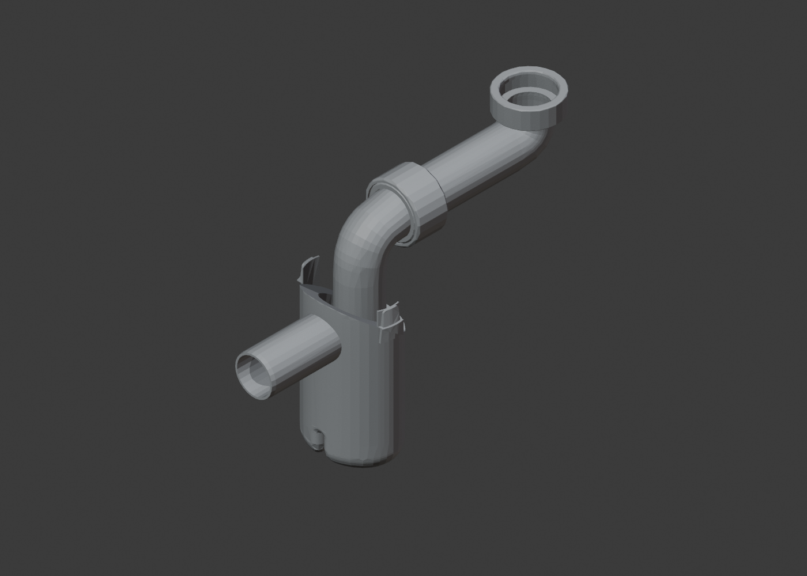

Plan

Black line = simplified drawing representation derived from the original high-poly geometry. Official G/A/L/P DWGs are archived and shown in blue as exact adjustable-family references, but their published default full extension is not substituted for the shortened project configuration.








7a50b87e8f48a7c2bfbaa9f1dabdfca7155fa684b2325c66aa1ae15c8ab0a25c